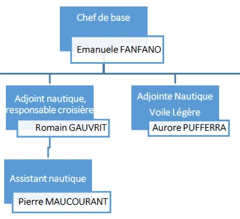
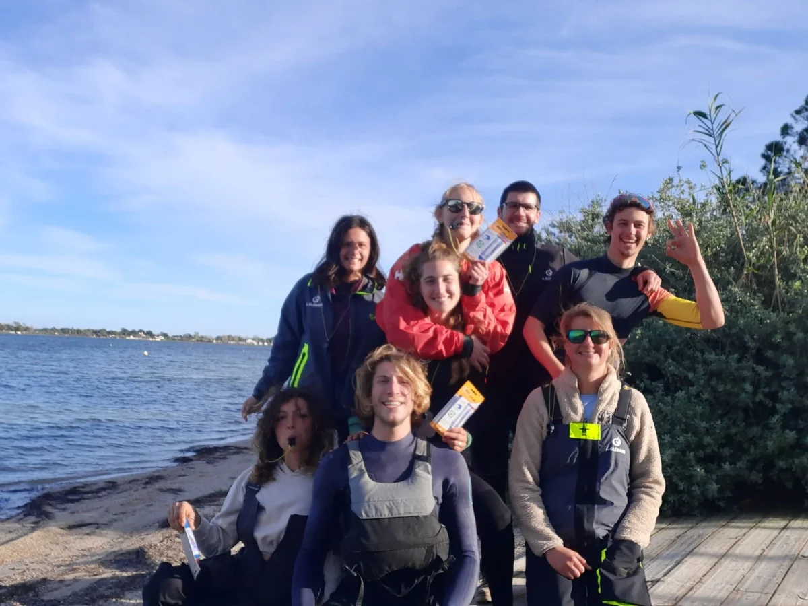
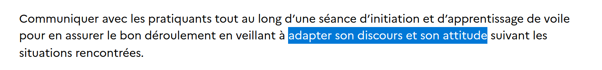
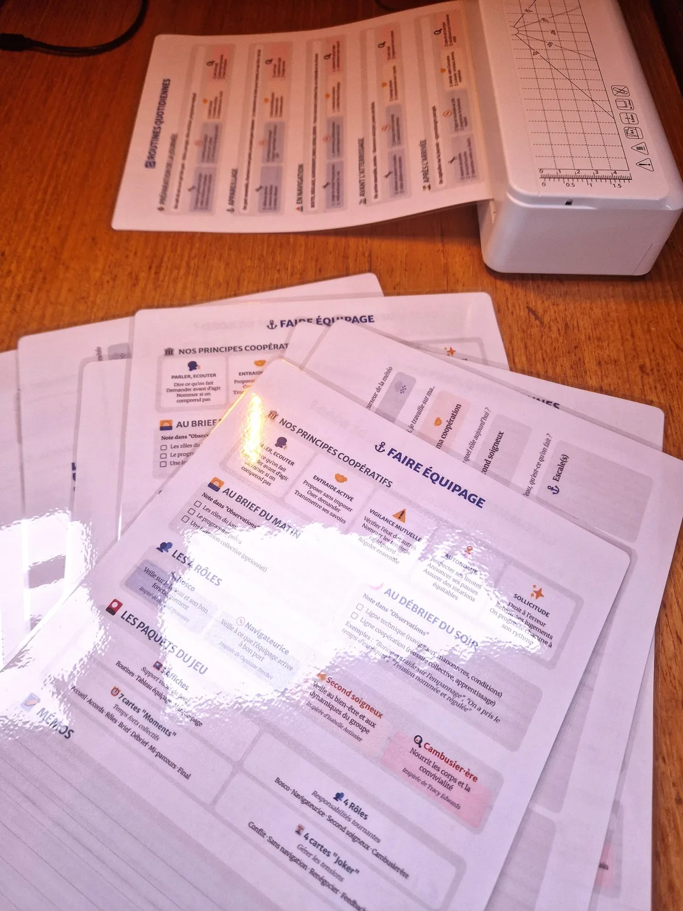
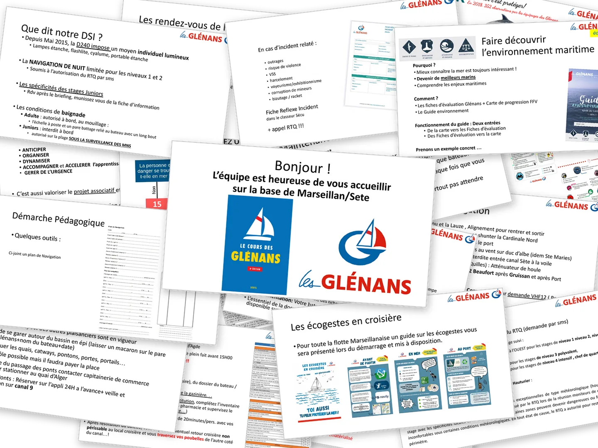
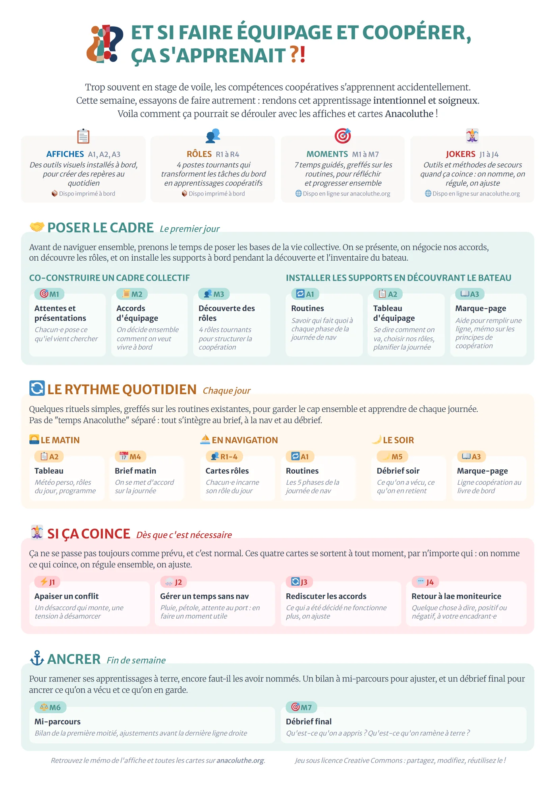
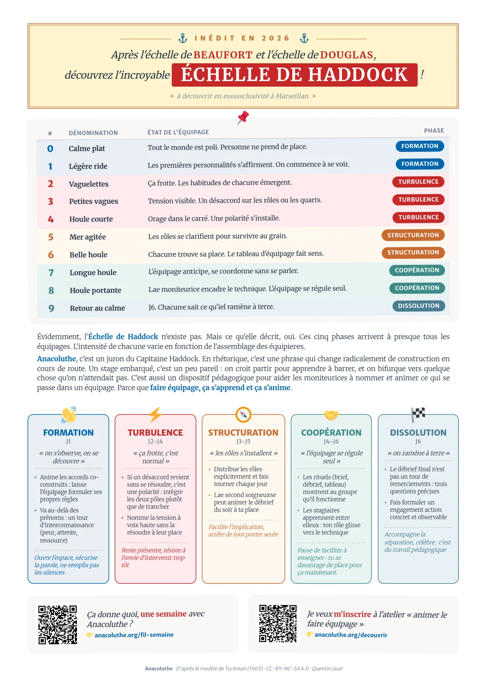

¿¡ Anacoluthe !?
Soutenance UC1-UC2 · BPJEPS voile habitable
Premières intuitions
Romain Gauvrit, responsable croisière

peu de bénévoles en monitorat embarqué, et de moins en moins
Les rapports de mer
à venir
de plus en plus de rapports de mer sur l'embarqué
Et si une des limites,
c'était le facteur humain ?
Demandons aux moniteurices
leurs freins à l'embarqué !
janvier à mars 2025 · bénévoles, CQP et salariés

Ce que disent les moniteurices
Comment donner aux moniteurices
les moyens d'animer le vivre-ensemble
dans un contexte qui génère autant de tensions
que d'opportunités d'apprentissage ?
Le vivre-ensemble est déjà au programme,
mais peu outillé
Les stagiaires · carte de progression FFVoile


Les moniteurices · CQP-IV



Pour la technique : cartes de progression, manuel, fiches.
Le terrain


La voile habitable à Marseillan, par an : environ 2 000 stagiaires,
une centaine de moniteurices, 12 à 14 voiliers.
Des méthodes qui découlent des contraintes
Les contraintes
- ma disponibilité : uniquement autour de l'encadrement, des stages et des moniteurices
- mes compétences et mes soutiens
- les modalités d'organisation de la base
Les méthodes
- une conception itérative, avec les usagers
- des formations inspirées de l'éducation populaire
- des mécénats de compétences
Trois publics, reliés
Les encadrants des moniteurices
RTQ, responsables croisière
être moins sollicités sur les tensions, pour accompagner les moniteurices
Les moniteurices
débutantes et expérimentées
animer le vivre-ensemble et l'enseigner
Les stagiaires
six jours à bord, en équipage
apprendre à coopérer en même temps qu'à naviguer
Ce qu'on veut leur faire acquérir
La moniteurice débutante
- organiser la vie à bord en s'appuyant sur son équipage
- repérer une tension et savoir par où commencer
La moniteurice expérimentée
- animer les moments clefs pour faire coopérer l'équipage
- laisser l'équipage réguler lui-même une tension
- questionner sa posture d'animation
Lae stagiaire
- tenir un rôle dans l'organisation collective
- dire une tension tôt et la régler ensemble
- questionner sa posture relationnelle
Une équipe pour y arriver
Quatre phases, un enjeu chacune
- 1Diagnostic et cadragejanvier à mars 2025 Comprendre le terrainpour ne pas se tromper de problème, et valider la commande
- 2Conception itérativeavril à décembre 2025 Prototyper rapidementpour être vite utile aux moniteurices
- 3Déploiement et formationmars à octobre 2026 Déployer dans les contraintesun outil efficace aux équipages, des formations adaptées aux moniteurices
- 4Évaluation et capitalisationjuin à octobre 2026 Évaluer pour évoluerpour dégager des perspectives et assurer la pérennité
Ce que l'équipe a produit

Une boîte à outils
pour les équipages

Des ateliers-formations
pour les moniteurices

Des outils rénovés
pour les encadrants
Une boîte à outils autonome
- Ce qui est imprimé à bord s'utilise en totale autonomie
- Chaque bloc est indépendant



Un cycle de co-conception,
répété de la V1 à la V5
- 1Prototyperavec les intervenants thématiques
- 2Testeravec les moniteurices testeurs
- 3Recueillir les retoursdes moniteurices et des stagiaires
- 4Penser les modificationsen atelier
Des pépites, chacune pour un public
Quatre exemples, un par famille du kit : chaque carte répond au besoin d'un public précis.
pour la débutante : s'organiser, se faire aider par l'équipage
pour les stagiaires curieux : un rôle qui n'existait pas à bord
pour toutes, même les habituées : un moment crucial et obligatoire
pour les stagiaires, et les moniteurices peu intéressées par le dispositif
Hors des bateaux, des affiches sur la base
Pour que le kit soit pris en compte, on en parle aussi sur les bases.
- Faire savoir l'initiative : le kit et les formations
- Acculturer au vocabulaire du vivre-ensemble


Phase 2 · conception itérative
Concevoir l'outil,
c'était déjà former
Co-conception avec 12 moniteurices testeurs · cycles de test en stage de 4 à 6 semaines · de la V2 à la V5
À l'issue, la moniteurice est capable de
- nommer les situations que l'outil doit couvrir
- tester une version en stage et en rapporter un retour précis
- arbitrer entre deux cartes et défendre son choix devant le groupe
- parler du vivre-ensemble avec un vocabulaire commun

Phase 3 · ateliers-formations
Les ateliers avec les moniteurices en 2026
En FPI2 ou en formation du vendredi, c'est le même atelier · 4 ateliers du vendredi de 2 h et 1 atelier FPI2 · arpentage, co-développement, apports · le fil : les cinq étapes de la vie d'un équipage
À l'issue, la moniteurice est capable de
- relier les constats du diagnostic à sa propre pratique
- analyser une situation vécue avec ses pairs et en tirer des pistes
- choisir dans le kit ce qu'elle mettra en œuvre sur son prochain stage
- parler du vivre-ensemble avec un vocabulaire commun

Phase 4 · évaluer
Ce qu'on a cherché à évaluer
Les stagiaires
On visait
coopérer à bord, et le réinvestir à terre
On a pu évaluer
ce qu'ils déclarent au retour : les tensions dites plus tôt
Les moniteurices
On visait
animer le vivre-ensemble en autonomie
On a pu évaluer
l'usage qu'elles décrivent, d'un stage à l'autre
Hors de portée : l'effet propre du dispositif.
Ce qui a marché, et comment aller plus loin
Ça a marché
Le kit circule sans moi 3 écoles extérieures, Concarneau, la FPI de MarseillanPour aller plus loin
l'inscrire dans l'outillage de l'association : stages P, FPI2, relais du CEBÇa a marché
La formation fait l'appropriation 22 moniteurices formées, l'usage tient d'un stage à l'autrePour aller plus loin
former, en plus d'outiller : un temps de formation planifié, des contenus pour les responsables pédagogiquesÇa a marché
Un projet porté à bout de bras ma disponibilité l'a fait existerPour aller plus loin
un relais nommé et mandaté, une maintenance du siteBilan, pour la structure et pour moi
Pour la structure
« En 2035, l'association Les Glénans est un lieu d'expérimentation de nouveaux possibles »
- 8 bateaux équipés
- les kits et la documentation en ressourcerie
- une partie des supports de démarrage rénovés
- environ 300 stagiaires touchés
Pour moi
- Réguler, c'est juger
- Conduire compte autant que concevoir
- Un projet d'animation est un processus social
Et ensuite : faire vivre le dispositif, mêler mes deux métiers